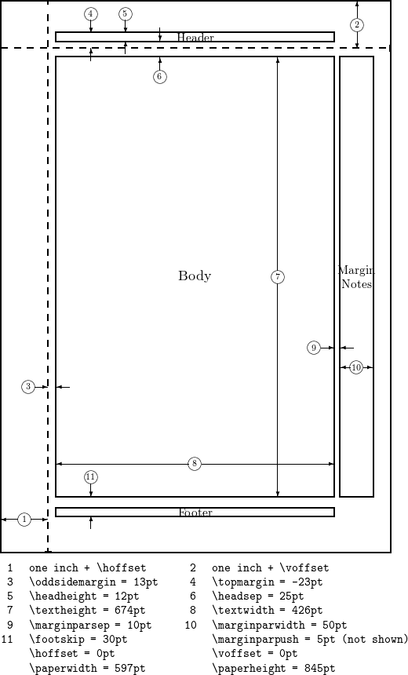
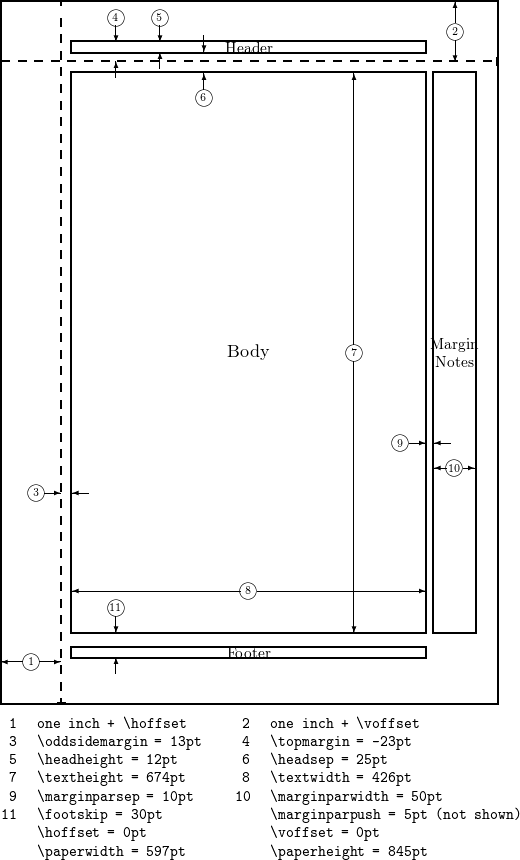

The page dimensions in a LATEX document are highly configurable and the geometry package offers a simple way
to change the length and layout of different elements such as the paper size, margins, footnote, header, orientation.
Geometry package has an auto-completion mechanism, in which unspecified dimensions are automatically determined.
The geometry package will be also useful when you have to set page layout obeying strict instructions: for example,
The total allowable width of the text area is 6.5 inches wide by 8.75 inches high.
The top margin on each page should be 1.2 inches from the top edge of the page.
The left margin should be 0.9 inch from the left edge.
The footer with page number should be at the bottom of the text area.
GEOMETRY
What is Geometry?
\usepackage{geometry}
CODE
\usepackage[total={6.5in,8.75in},
top=1.2in, left=0.9in, includefoot]{geometry}. Page geometry
The page layout contains a total body (printable area) and margins. The total body consists of a body (text area) with an optional header, footer and marginal notes (marginpar).
There are four margins: left, right, top and bottom. For twosided documents, horizontal margins should be called inner and outer
Each margin is measured from the corresponding edge of a paper. For example, left margin (inner margin) means a horizontal distance between the left (inner) edge of the paper and that of the total body. Therefore the left and top margins defined in geometry are di↵erent from the native dimensions \leftmargin and \topmargin. The size of a body (text area) can be modified by \textwidth and \textheight. The dimensions for paper, total body and margins have the following relations.
Each margin is measured from the corresponding edge of a paper. For example, left margin (inner margin) means a horizontal distance between the left (inner) edge of the paper and that of the total body. Therefore the left and top margins defined in geometry are di↵erent from the native dimensions \leftmargin and \topmargin. The size of a body (text area) can be modified by \textwidth and \textheight. The dimensions for paper, total body and margins have the following relations.
paperwidth = left+width+right paperheight = top+height+bottom
Manipulate page geometry
Paper size, orientation and margins are the most common page elements that must be changed depending on the type of document.
To set the desired values there are two ways, either you pass them as parameters to the \includepackage statement:
CODE
\usepackage[legalpaper, landscape, margin=2in]{geometry}
or use a \geometry command in the preamble. In fact you can achieve the same thing in a slightly different way:
CODE
\usepackage{geometry}
\geometry{legalpaper, landscape, margin=2in}Useful parametres
The geometry package provides a flexible and easy interface to change page dimensions.
You can change the page layout with intuitive parameters.
The parameters have to be written in the form parameter=value, use standard LATEX units. (mm, cm, pt, in).


textwidthCorresponds to element 8 in the figure.
textheight Element 7 in the figure.
total Depends on other parameters, by default defines the dimensions of the Body, but can be combined with the includehead, includefoot, includeheadfoot and includemp commands to change the dimensions of Header, the Body, the Footer and the Margin Notes altogether.
left, lmargin, inner These three parameters change the length of the left margin. Elements 1 and 3 in the figure, combined.
right, rmargin, outer These three parameters change the length of the right margin. Elements 9 and 10 in the figure, combined.
top, tmargin These two parameters represent elements 2 and 6 in the figure, combined.
bottom, bmargin These two parameters set the distance from the bottom edge of the document to its baseline.
headheightHeight of the header
footsepSeparation between the bottom of the text (baseline) and the top of the footnote. Element 11 in the figure.
footskipDistance between the baseline of the text and the baseline of the footnote.
marginparwidth, marginparWidth of the margin notes. Element 10 in the figure.
The paper size can be set to any size you need by means of the command papersize={⟨width⟩,⟨height⟩}.
Let's see an example:
CODE
\usepackage{geometry}
\geometry{
a4paper,
total={170mm,257mm},
left=20mm,
top=20mm,
} Here the text area, the left margin and the top margin are set. The right and bottom margins are automatically computed to fit the page.